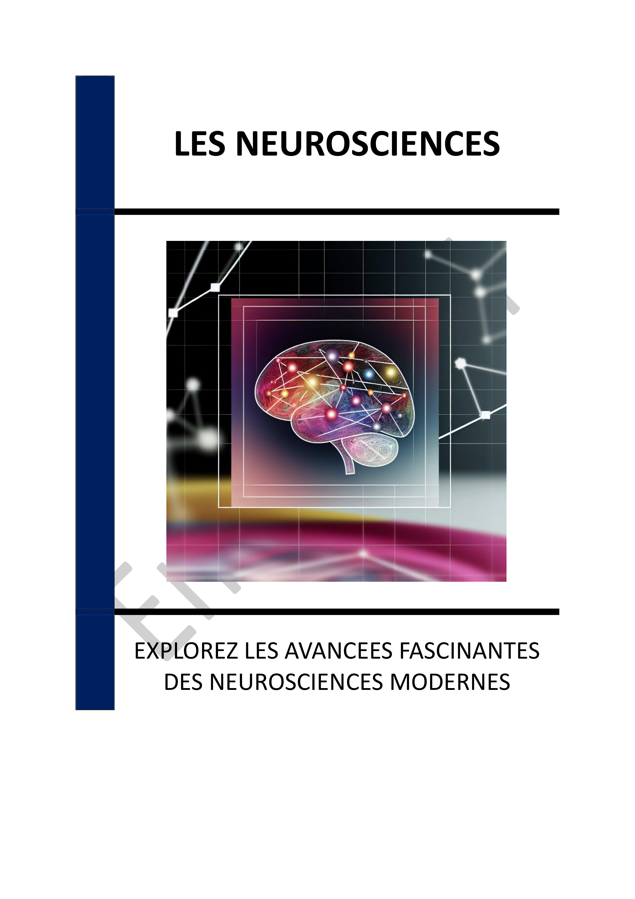

▶
Vitesse
++
+
=
-
--
INTRODUCTION - LES NEUROSCIENCES : UNE EXPLORATION FASCINANTE DU CERVEAU HUMAIN
Chapitre 1 - INTRODUCTION AUX NEUROSCIENCES : DÉFINITION ET CHAMP D'ÉTUDE
1.1 - Origines et développement des neurosciences
1.2 - Les disciplines intégrées dans les neurosciences
1.3 - Les objectifs et enjeux des neurosciences
Chapitre 2 - LES MÉCANISMES DE LA PERCEPTION ET DE LA MÉMOIRE
2.1 - Les bases biologiques de la perception
2.2 - Les processus de formation de la mémoire
2.3 - Les troubles de la mémoire et leurs implications
Chapitre 3 - LE RÔLE DES ÉMOTIONS DANS LA COGNITION
3.1 - Interaction entre émotions et cognition
3.2 - Les bases neurobiologiques des émotions
3.3 - Applications pratiques des recherches sur les émotions
Chapitre 4 - LA PLASTICITÉ CÉRÉBRALE : ADAPTABILITÉ ET APPRENTISSAGE
4.1 - Les mécanismes de la plasticité cérébrale
4.2 - La plasticité cérébrale dans la réhabilitation
4.3 - Implications pour l'éducation et l'apprentissage
Chapitre 5 - LES TECHNOLOGIES D'IMAGERIE CÉRÉBRALE AVANCÉES
5.1 - Introduction aux technologies d'imagerie
5.2 - Applications cliniques des technologies d'imagerie
5.3 - Développements futurs en imagerie cérébrale
Chapitre 6 - APPLICATIONS DES NEUROSCIENCES EN ÉDUCATION
6.1 - Comprendre le développement cérébral des élèves
6.2 - Méthodes pédagogiques basées sur les neurosciences
6.3 - L'impact des neurosciences sur l'éducation inclusive
Chapitre 7 - IA ET NEUROSCIENCES
7.1 - Les principes neuroscientifiques dans l'IA
7.2 - Applications de l'IA en neurosciences
7.3 - Les défis et limites de l'intégration IA-neurosciences
Chapitre 8 - LES ENJEUX ÉTHIQUES DES AVANCÉES NEUROSCIENTIFIQUES
8.1 - La manipulation des capacités cérébrales
8.2 - La vie privée et les données cérébrales
8.3 - Les limites de l'exploration neuroscientifique
CONCLUSION - LES NEUROSCIENCES : UN REGARD VERS L'AVENIR
📄 Consulter les annexes du livre
Mentions légales